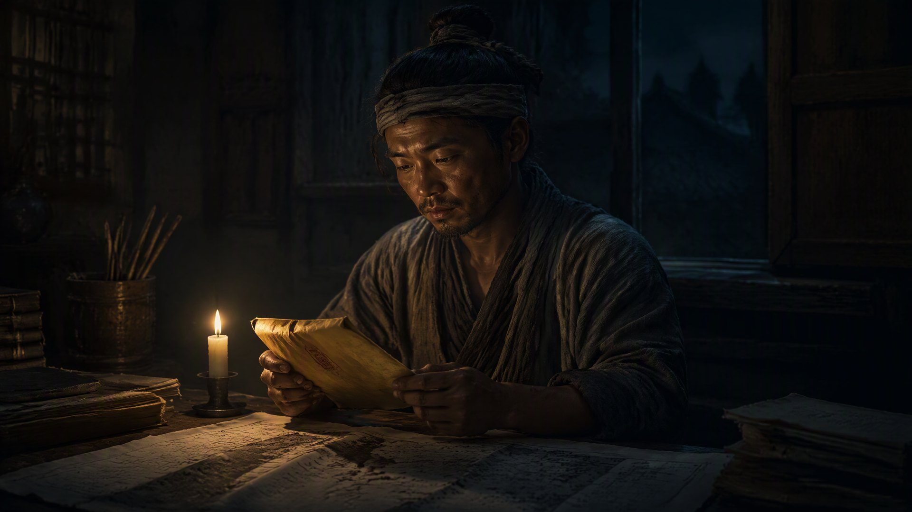

祖境之问

（第五卷《祖境》）
诏书是洪武十年秋天到的。
不是征召入京，不是加官进爵——是朱元璋派了内臣到百曲，请火焱“来京一叙，共议漕运”。措辞客气，可火焱捧着那卷黄绫，手是稳的，心却沉了下去。
洪武十年。他研究明史多年，这个年份他再清楚不过——还有三年，胡惟庸就要死了。再往后，蓝玉，再往后，淮西勋贵一个一个地倒。朱元璋的刀，从来不是突然落下的，是一寸一寸、一年一年地逼过来的。火家当年求的“三样”——不入军籍、海路不走兵、耕读传家——如今看来，正是为这一天备下的。
“大郎，去还是不去？”海妹问，脸上没了往日的利落，眉头锁着。
火焱把诏书折好，放在灶台上，没说话。他走到义学，站在窗外，听孩子们读书。先生正教到《孟子》：“穷则独善其身，达则兼济天下。”孩子们拖长了音，一个字一个字地念。火焱听了很久。
“不进京。”他回来，对海妹说，“可也不能让陛下觉得火家抗旨。”
“那怎么办？”
“报病。”火焱说，“报我染了时疫，出不得海，更进不得京。请陛下宽限。”
“装病？”海妹急了，“陛下什么人？他查你病真病假，比翻账本还容易。”
“不是装。”火焱蹲下来，往灶膛里添了根柴，“火家得真退——退到让陛下觉得，火家已经不值得他动手。海路，交一半给朝廷；军器司，铜符还回去；灶火号的商路，只留百曲一带。火家从'江南海路大使'，退回'百曲灶户'。”
海妹没再说话。她知道火焱说得对。她也知道，火家能有今天，靠的就是当年那一句“急流勇退”。如今急流又来了，得再退一次。
这天夜里，火焱独自走到百曲第一口灶前。他老了——不到四十，可两鬓已经斑白。二十多年，从九岁到如今，他把这口灶看了无数遍。灶还是那口灶，火还是那团火，可烧火的人，已经从一个逃难的娃，变成了一个要替一家老小打算退路的人。
他闭上眼，把丹田里的火催动起来。八色火焰——赤红、橘黄、白金、橙金、赤金、青白、透明、灰金——齐齐亮起。八转混沌火，已经是他能烧到的极致。可系统说过，赤火九转，还有最后一转。
祖境。
他催动了半宿，火是旺的，却始终摸不到第九转的门。赤火祖境，究竟是烧成什么样？是比混沌火更厉害的火？还是……
“小子，”系统之声忽然响起，不是从耳边，是从他胸腔深处，像一团火自己在说话，“你烧了这么多年，还没想明白最后一转是什么吗？”
“祖境。”火焱说，“赤火九转的尽头。”
“尽头是什么？”
“是……最强的火。”
“错。”系统之声笑了，笑得像火苗噼啪，“祖境不是最强的火。祖境，是你不再需要火。”
火焱愣住了。
“前面八转，教你烧火——灶火求生，燎原开疆，熔金锻器，赤阳射远，焚天破敌，不灭保命，归元返本，混沌无形。这八转，一转比一转强。可第九转，不是让你烧得更旺——是让你成为那个'点别人火'的人。”系统之声顿了顿，“祖。是源头。赤火祖境，不是你自己成祖，是让你的火，往后能一代一代地自己烧下去，不用再靠你。”
火焱蹲在灶前，看着那团赤红的火，看了很久。
他忽然想起直脱儿。那个蒙古老将，烧了一辈子的火，从博尔赤的御膳灶，烧到江浙平章的官署，最后封脉自绝，把火种封进血脉里，等了七十年。直脱儿烧到了极致，可他还是靠“封脉”才能把火传下去——他没能到祖境。
而火焱，二十多年前在松江城的刀口下，指着灶膛说“姓火”，那时候他就已经比直脱儿多走了一步——他不是靠封脉传火，是靠一口灶、一间义学、一群孩子，把火种在了人心上。
“老祖宗，”火焱轻声说，“祖境……是不是就是——灶？”
“是。”系统之声答，“灶在，火在。火在，人在。你早就不需要我教你烧火了。你的火，已经在百曲每一户人家的灶膛里，自己烧着。”
火焱站起身。灶膛里的火，赤红赤红地跳着，映着那张已经不再年轻的脸。
他没有突破什么。可他知道，第九转的门，就在眼前了——不是靠催动丹田，是靠放下一件事。放下“火家不能没有火焱”这件事。等哪一天，火家没有他，也能把火烧得旺旺的——那就是祖境。
门外，义学的书声又响起来了，混着铁匠炉的风箱声，混着海路的号子声。
火焱推开门，走了出去。
进京的事，得先应付过去。可应付过去之后，火家真正要做的，是另一件事——把火，传得再远一点。远到百年之后，远到火家没有火焱、没有灶火号、没有海路的时候，那团火，还在烧。
“海妹，”他对着夜色喊了一声，“把先生请来。火家，再办一间义学。”
“还要办？”
“要。”火焱说，“火家的孩子要读书，百曲的孩子要读书，整个松江府的孩子，往后都要读书。灶能烧饭，书能烧心。火家能留给后人的，不是海路，不是铁器，不是银子——是这间义学里，一代一代传下去的字。”
夜色里，海妹应了一声。远处，义学里最后一盏灯，正一点一点地亮起来。
像一团烧了几十年、却从不肯熄灭的火。
· 第五卷《祖境》 ·